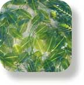

Seagrasses and seaweeds on Singapore shores: text index
Plants on This Site
don’t know the name of the plant? Try the photo index of lifeforms
Intertidal and Marine Plants

All marine seaweeds

All marine seagrasses

mangroves and coastal trees and plants
FREE photos from wildsingapore. Make your own badge here.
Photo Index of Plants on This Site
mangroves and coastal plants | all seagrasses | all seaweeds